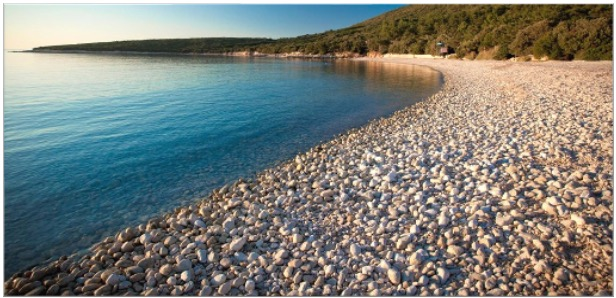
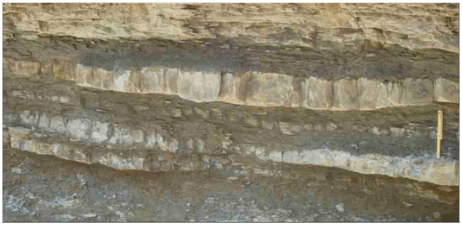
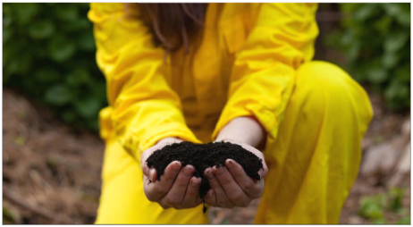
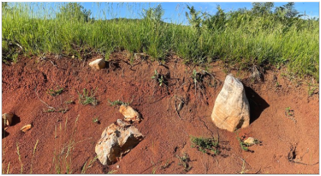

Rund 57% der Landfläche Kroatiens werden für Acker, Felder, Wiesen oder Ähnliches verwendet.
Am häufigsten in Kroatien aufzufinden ist die rote Erde. Diese ist sehr fruchtbar,
weshalb insgesamt der Boden sehr geeignet ist für jeglichen Anbau, wie beispielsweise von Kartoffeln, Wein, Getreide oder Tabak.
Jedoch wird der Boden Kroatiens grundsätzlich in 4 Typen unterteilt, was auch Quattro Terre genannt wird.

Die weiße Erde besteht hauptsächlich aus steinigem Boden.

Das graue Flyschgebiet im zentralen
Istrien bestet aus Mergel, Sandstein und weichem Kalkstein.

Die schwarze Erde ist meist Humus. Diese ist sehr fruchtbar, kostbar und super.

Der am häufigsten vorkommene Bodentyp ist die rote Erde, oder auch terra rossa genannt.
Diese ist noch fruchtbarer als die Humuserde, da diese sehr gut Wasser speichert und reichhaltig an Mineralien ist.